Large and Fast: Exploiting Memory Hierarchy¶
约 3484 个字 14 张图片 预计阅读时间 14 分钟
Introduction¶
Locality¶
我们知道指令和数据都储存在 memory 中，程序运行时需要访问 memory，这是比较耗时的。我们注意到程序对 memory 的访问有以下两个特点：
-
Temporal Locality（时间局部性）: 如果 memory 中的一个元素被访问，那么它很可能在不久后被再次访问
- 例如循环体中的指令等
-
Spatial Locality（空间局部性）: 如果 memory 中的一个元素被访问，那么它附近的元素也很可能被访问
- 例如数组中的元素、连续执行的指令等
根据上面两个特点，我们可以在常规的 memory 之上增加一层访问速度更快，但容量更小的存储，称为 cache。cache 会存储最近被访问的 memory 中的数据，利用数据的局部性加快程序访问数据的效率。
- Memory hierarchy
- Store everything on disk
-
Copy recently accessed (and nearby) items from disk to smaller DRAM memory
- Main memory
-
Copy more recently accessed (and nearby) items from DRAM to smaller SRAM memory
- Cache memory attached to CPU
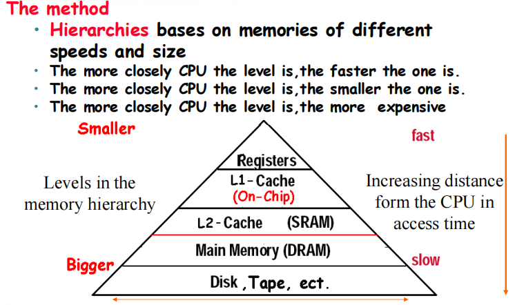
-
Block (aka line): unit of copying
从内存中复制到 cache 的数据以 block 或称 line 为单位，它通常是 byte（也可能是 word）的若干次方那么大。
-
Hit: The CPU accesses the upper level and succeeds.
上级的存储器中有我们需要的数据，不需要访问下级存储器。
- Hit rate: hits / accesses
- Hit time: 访问上级存储器并且判断是否命中的时间
-
Miss: The CPU accesses the upper level and fails.
上级的存储器中没有我们需要的数据，需要从下级存储器取上来
- Miss rate: misses / accesses = 1 - hit rate
- Miss penalty: 访问下级存储器，找到相应的 block 并且将它数据复制到上级存储器的时间
The basics of Cache¶
下面我们来具体关注 cache 是怎么实现的，主要需要讨论的问题是：
- 如何知道一个 block 是否在 cache 里？
- 如果它在 cache 中的话，如何找到它？
Direct Mapped Cache¶
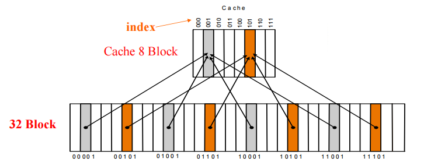
所谓 direct mapped 就是内存中的每一个 block 都只能对应于 cache 中的一个位置，并且 cache 可以容纳的 block 数量通常都是 2 的幂次，因此我们可以用这个这些数据的内存地址模上 cache 的大小来得到它在 cache 中的位置，得到的结果其实就是内存地址的低位，我们用 index 来表示。
但是因为 cache 的大小是一定小于内存大小的，这样就会导致不同的 block 有可能会映射到同一个位置，因此我们为了判断一个 block 中的数据是哪一个地址的，我们还需要额外保存的信息，这个信息我们称为 tag。
- 由于 block 中的低位是 index，因此我们只需要把地址的高位作为 tag 就可以了
除了 tag 之外，我们还需要确定 cache 中的数据是从内存中取出来的有效数据，还是一些无用的杂乱数据，我们使用 valid bit 来表示这个 block 是否是有效的。
- Valid bit: 1 = present, 0 = not present
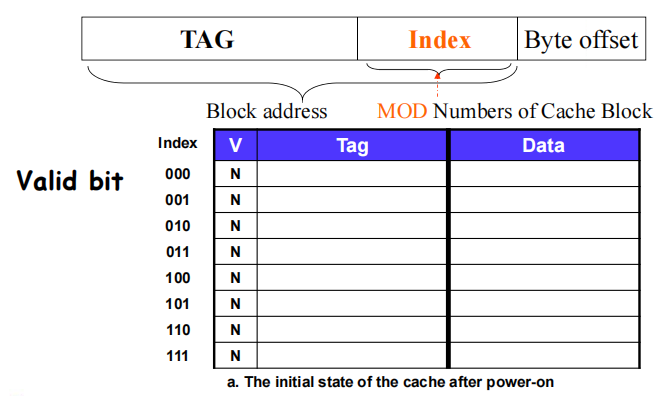
因为一个 block 中会有多个 byte 的数据，因此在地址中还有一个 byte offset，需要注意的是我们的内存都是以 byte 为单位寻址的，所以 byte offset 的大小取决于一个 block 中有多少个 byte。
- byte offset：由 block size 决定，即一个 block 有多少个 byte
- index ：由 cache size 决定，即 cache 中有多少个 block
-
tag：由总的地址位宽减掉其他位决定
tag = address width - index width - byte offset width
Bits in Cache
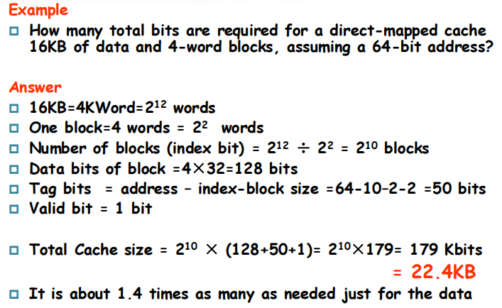
block size
一般而言 block size 越大，miss rate 会更低
- 根据空间局部性的特点可以知道这一点
但在一个大小固定的 cache 中
- 更大的 block \(\Rightarrow\) 更少的 block \(\Rightarrow\) 更高的 miss rate
- 更大的 block 也会造成空间的浪费，因为有时候我们只需要 block 中的一小部分数据
同时更大的 block size 也会带来更大的 miss penalty
因此实际上 block 的大小是一个 trade-off
Handling Cache hit and Misses¶
在对内存进行读和写的时候发生 cache miss 时的处理方式是不同的
Read hit：直接从 cache 中读取数据
Read miss：
-
data cache miss：
先把对应的 block 从内存中取到 cache 里，然后再读
-
instruction cache miss：
暂停 CPU 的运行，即保持 PC 不变，从 memory 里把对应的 block 拿到 cache，然后重新运行当前这条指令
Write hit
-
write-back：只把数据写到 cache 中，等到这个 block 要被替换出去的时候再把它的内容写回。
这种情况需要在 cache 中额外添加一个 dirty bit，用来表示这个 block 是否被修改过，如果被修改过，那么在替换出去的时候需要把它的内容写回到内存中；否则这个 block 被替换的时候就不需要写回内存了。
-
write-through：把数据同时写到 cache 和 memory 中，这样可以保证 cache 和 memory 中的数据一致，但缺点是每一次 write 都要访问内存，操作的速度是很慢的。
-
一个改进的方案是添加一个 write buffer，当需要改写 main memory 的时候把对应的内容先放到这个 buffer 里去，等到空闲时再把 buffer 中的内容写到 memory 中。
当然如果出现 buffer 满了的情况，也需要暂停 CPU 去做写入 memory 的工作，因此如果 main memory 的写入速率低于 CPU 产生写操作的速率，那么多大的缓冲都无法避免暂停 CPU 的情况。
-
Write miss
- write-allocate：类似于 read miss，先把 block 从 memory 中取到 cache 中，然后再写入
- write-around（or write-no-allocate）：直接写入 memory，不把 block 从 memory 中取到 cache 中
write back 只能和 write allocate 配合使用；write through 通常和 write around 配合使用
Deep concept in Cache¶
对于 cache 的设计，我们主要关注以下 4 个问题
- Where can a block be placed in the upper level? (Block placement)
- How is a block found if it is in the upper level? (Block identification)
- Which block should be replaced on a miss? (Block replacement)
- What happens on a write? (Write strategy)
Block Placement¶
-
Direct mapped：直接映射
每一个 block 只能映射到 cache 中的一个位置，它对应的 index 是 block 的地址模上 cache 的块的数量得到的
-
Fully associative：全相联
Block can go anywhere in cache.
只要有空位，block 可以存放在 cache 中的任何一个位置
- 好处是可以降低 miss rate
- 坏处是每一次都要遍历整个 cache 才能判断一个 block 是否在 cache 中，即 hit time 增加了
-
Set associative：组相联
Block can go in one of a set of places in cache.
组相联介于上面两种方法之间，cache 被分成了若干个 set，每一个 set 里有若干个 block，每一个 block 都对应于一个 set，可以被存放在这个 set 中的任意一个位置
- 2-way set associative：每一个 set 里有两个 block
- 4-way set associative：每一个 set 里有四个 block
- n-way set associative：每一个 set 里有 n 个 block
通常 set associative 的 cache 会比 direct mapped 的 cache 有更低的 miss rate，但是 hit time 会比 direct mapped 的 cache 高
Tip
事实上
- Direct mapped 相当于 1-way set associative
- Fully associative 相当于 m-way set-associative（其中 m 是 cache 中 block 的数量）
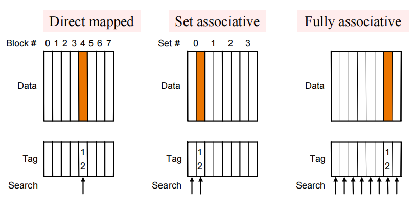
Block Identification¶
我们通过 tag 来判断 cache 中的 block 到底对应的是哪一个内存地址的数据，而 tag 的大小又取决于 cache 的大小（index）和 block 的大小（byte offset）。
- 直接映射只需要比较 cache 中一个块的 tag
- 全相联需要依次对照 cache 中所有块的 tag
- 组相联需要先找到对应的 set，然后再对照 set 中所有块的 tag
The Index field selects
- 全相联没有 index
- 组相联的 index 取决于 set 的数量，即 \(\text{index} = \log_2(\text{number of sets})\)
- 直接映射的 index 取决于 cache 中块的数量，即 \(\text{index} = \log_2(\text{number of blocks})\)
同时，byte offset 取决于一个块内 byte 的数量 \(\text{byte offset} = \log_2(\text{block size})\)
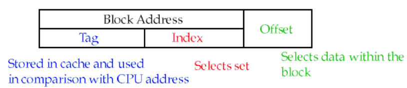
计算 cache 的 tag
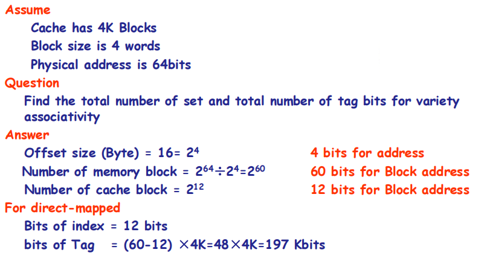
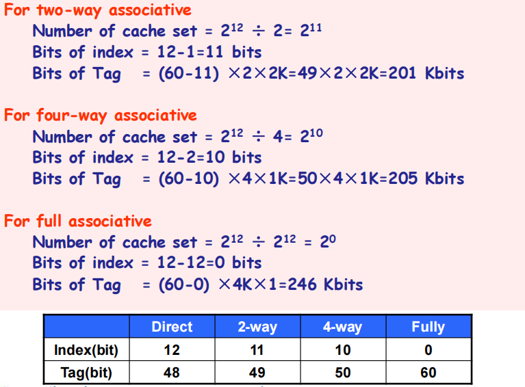
Block Replacement¶
当一个 block 要被复制到 cache 中时，如果发现这时候它对应的位置已经被占满了，那么就要把 cache 中的一个 block 替换掉，这个过程就是 block replacement。
对于 direct-mapped cache，我们只需要替换掉它对应的那个位置上的块即可；但对于 set-associative cache 和 fully-associative cache，它有多个可以选择的位置，那么我们就需要一个替换策略来决定替换哪一个 block。
-
Random replacement —— randomly pick any block
- Easy to implement in hardware, just requires a random number generator
- Spreads allocation uniformly across cache
- May evict a block that is about to be accessed
-
Least-recently used (LRU) —— pick the block in the set which was least recently accessed
- Assumed more recently accessed blocks more likely to be referenced again
-
This requires extra bits in the cache to keep track of accesses.
需要额外的 bit 来储存信息，从而实现 LRU
-
First in,first out（FIFO）—— Choose a block from the set which was first came into the cache
Write Strategy¶
上面在介绍 write hit/miss 的时候实际上就已经把 write strategy 介绍了，这里就不再赘述了。
Virtual Memory¶
Main Memory act as a “Cache” for the secondary storage.
考虑到内存的层次架构，我们可以把主存当成磁盘的一个缓存
- 所有的进程都共享同一个内存，但是实际上每一个进程都只关心自己的内存空间，并不关系其他程序在内存的哪里。也就是说，每一个进程都认为自己独享了一片地址空间，并且上面的内容是“连续的”，我们把这种地址空间称为虚拟内存空间（virtual memory）
- 但实际上我们不可能保证每一个进程所使用的内存都是连续的，因此我们需要采取一种措施来把“连续”的虚拟地址（virtual addresses）映射到内存中的真实地址（physical addresses），它称为 address translation
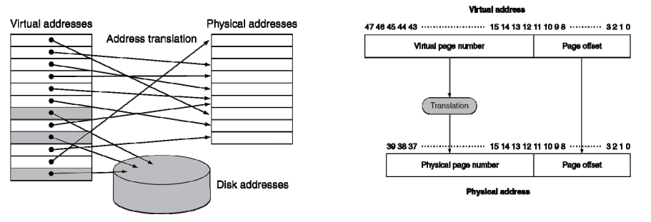
Pages: virtual memory blocks¶
page 是虚拟地址到物理地址映射的最小单位
Page faults: the data is not in memory, retrieve it from disk
-
huge miss penalty, thus pages should be fairly large e.g. 4KB
增大 page 的大小可以一定程度上减少 page fault 的次数
-
reducing page faults is important
因为每一次出现 page fault 我们都需要访问一次 disk，这是非常耗时的（访问时间可以达到访问 memory 的十万倍），因此我们需要尽可能减少 page fault，例
-
can handle the faults in software instead of hardware
出现缺页时由操作系统进行处理，而非在硬件层面进行处理
-
using write-through is too expensive so we use write back
访问硬盘太慢了，因此我们要采用 write back 策略
Page Tables¶
我们使用一个表格来记录虚拟地址和物理地址之间的映射关系，它被存储在 memory 中，称为页表（page table）。
一个虚拟地址被分割成两部分
- 一部分是 page offset，大小由 page 含有的 byte 数量决定
- 另一部分是 virtual page number，它的作用相当于 page table 的 index，我们需要根据它来找到页表中对应的 entry，这个 entry 中储存的内容就是物理地址的高位，即 physical page number
page table
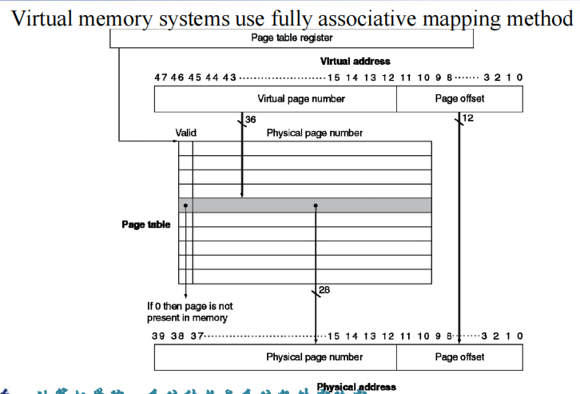
如上图所示，上图中一个 page 的大小为 4KiB = \(2^{12}\) bytes，于是 page offset 为 12-bit，虚拟地址的剩余部分就是 virtual page number。
最后我们从 page table 中取出来 physical page number 之后把它和 page offset 组合到一起，就最终得到了这个进程所需内容在内存中的真实地址。
每一个进程都有自己各自的 page table，program counter 和 page table register（用来存储它对应的 page table 的位置），当我们在进程中切换时，只需要切换页表就可以了。
由于出现 page fault 会带来很大的开销，因此为了提高 hit rate，我们在页表中使用全相联的方式。
How larger page table?
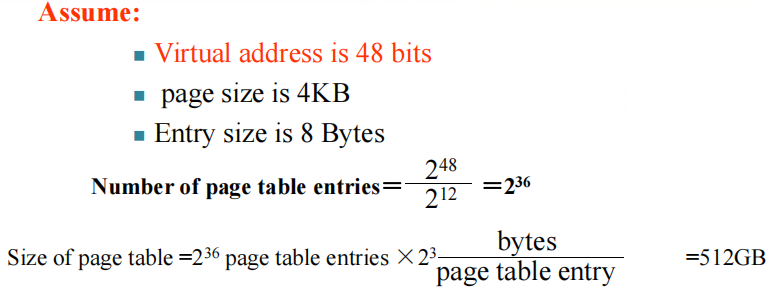
Making Address Translation Fast——TLB¶
事实上我们使用页表来进行虚拟地址和物理地址之间的转换时，也是相当耗时的
- 先根据 virtual page number 找到对应 page table entry 在 page table 中的偏移
- 再把这个偏移加上 page table register 中储存的地址，得到对应的 entry 在内存中的地址
- 然后根据这个 entry 中的内容得到 physical page number，最终得到 physical address，并访问对应的字节内容
于是我们设计了一个专门为 page table 服务的 cache，称为 translation look-aside buffer (TLB)，这样我们需要进行地址转换时，就可以先在 TLB 中找，找不到再去页表中找。
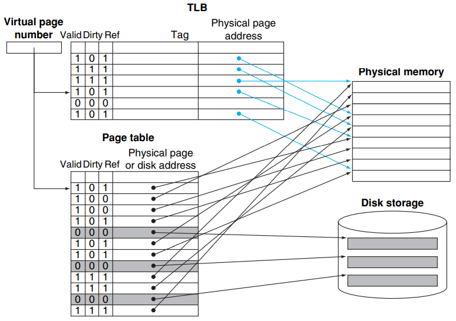
Tip
- 虽然页表的作用很像是一个 cache，但它实际上是存储在内存中的，并不是 cache
- TLB 确实是一个 cache
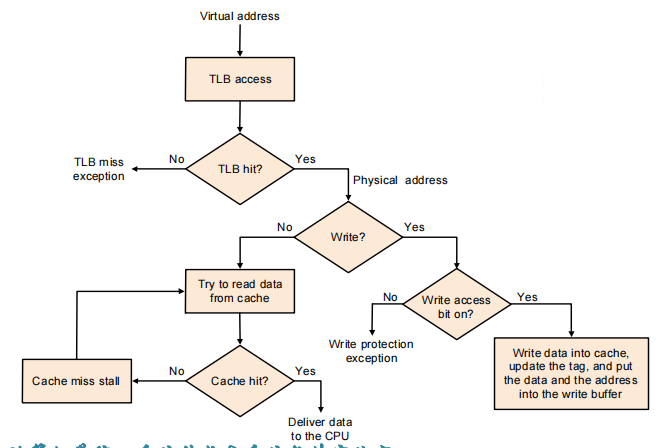
当出现 TLB miss 的时候，CPU 会去 page table 中查找对应的项
- 如果发现对应项的 valid bit 是 1，那么就把它拿到 TLB 里此时被替换掉的 TLB entry 的 dirty bit 如果是 1，也要写回 page table）
- 如果对应项的 valid bit 是 0，就说明这一个 page 不在内存中，会触发一个 page fault。OS 会先把这个 page 从 disk 中取到内存中，并更新 page talbe，最后再重新执行一次 TLB 的查找
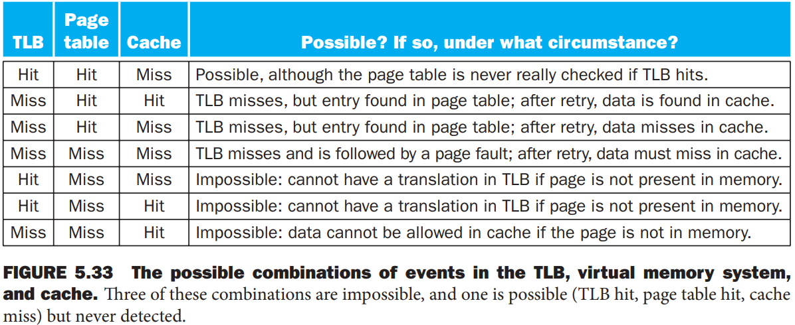
- TLB，page table 和 cache 全部 hit 的情况是非常显然的，因此就没有出现在上表中
- 上述的最后三种情况是不可能出现的，因为当出现 page table miss 的时候就说明这一个 page 并不在内存中，因此 TLB 和 cache 都不可能 hit
Protection in the virtual memory System
虚拟内存技术使得各个进程之间并不知道其他进程的物理地址空间，只有操作系统（OS）知道所有进程的地址空间，这样就保证了进程之间不会相互干扰，也避免了某些进程对于内存空间的破坏。